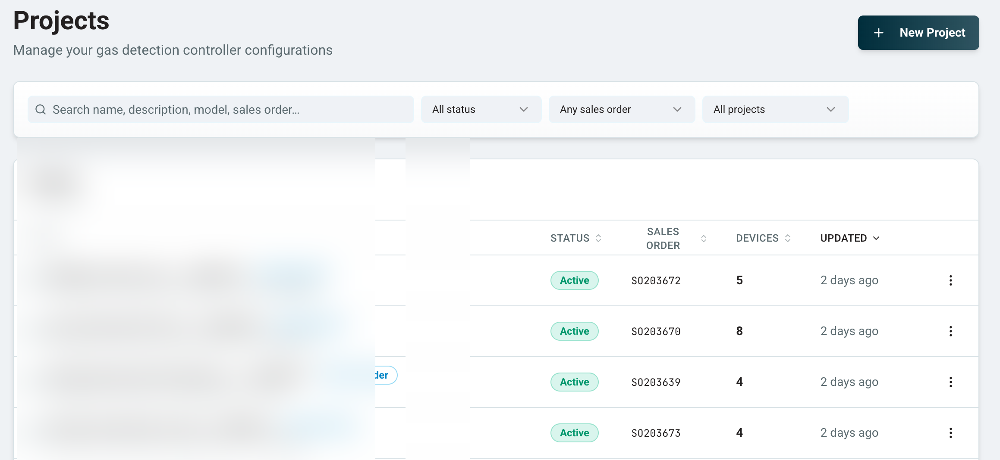
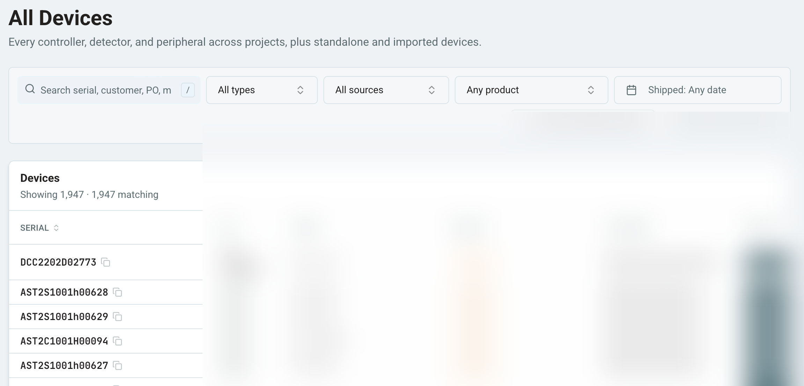

The Problem
Application engineers were building controller configurations in an Excel macro workbook, while production was managing device files and order data through a separate legacy database system. Two tools, overlapping data, no connection between them. Large configurations took nearly two hours of engineering time, the tool was slow and brittle running on VBA, and every error became a support ticket. On the production side, device configurations had to be loaded individually even for large systems, and serial numbers were tracked in a paper logbook. Neither tool scaled.

Phase 1 — PM
I scoped the product, defined the ERP data model, and managed an external developer to build the first version, a web configurator integrated with Microsoft Business Central. The core architecture decision was to keep configuration metadata separate from the ERP core to avoid bloat, while keeping Business Central as the source of truth for products, pricing, and fulfillment. We also set up the Supabase database from the start to support the configurator, which later became the foundation for the full production database system.
Before any code was written, I prototyped the UI in MagicPatterns to get stakeholder buy-in on the interface. Excel was deprecated on launch day with no fallback.

Phase 2 — PM
After launch, I took over the frontend codebase and rebuilt the UI to serve application engineers, who needed full technical control to design complex multi-zone systems with multiple controllers, channels, and priorities.
I also set up a bug and feature request ticketing system to triage and prioritize issues coming in from the team.


Phase 3 — Platform Expansion: Production Database
After the configurator launched, I scoped and oversaw the development of a second tool: a production database that replaced both the paper logbook and a legacy database system that had accumulated ~20 years of unstructured data.
The database serves the production team, who converts sales orders to work orders, stores device configuration files, and auto-detects units by serial number and Modbus ID. Bulk drag-and-drop replaced one-by-one manual file loading, cutting unit build time by ~10%.



The key architectural decision was to merge the production database with the configurator Supabase backend, sharing the same holding register tables. This means a controller configuration created by an application engineer flows directly into production with zero manual re-entry, critical for complex, non-default systems with customer-specific requirements.
The consolidation cleaned up ~20 years of unstructured legacy data into a searchable schema with custom fields built around how production and application engineers actually work.
Testing & Hardware Validation
The configurator's output is a .cfg file that programs a physical controller in the field. A misconfigured file means a misconfigured installation. I treated quality accordingly:
- Wrote 20 structured test cases covering edge cases, constraint violations, and standard production configurations
- Used AI-assisted regression testing to validate .cfg output after every UI change or bug fix
- Built a bug ticketing system, prioritized issues, resolved some personally and worked with a developer to close the rest
- Personally loaded exported .cfg files onto physical controllers and validated behavior for every test case
Every change I shipped was validated against the physical controller a technician would install in a parking garage or a distillery. That's the bar I held myself to.
Results
- 75%+ reduction in configuration time, large jobs from ~2 hours to under 30 minutes
- ~10% reduction in unit build time through the production database
- Production database replaced a paper process and a costly legacy system, consolidating ~20 years of unstructured data into a clean, searchable schema
- Zero manual re-entry for complex configurations, application engineer configurations flow directly into production through the shared database
- Full internal adoption across production and application engineering teams